توثق هذه الصفحة مجموعة من الأعمال والمشاريع والفعاليات التي شاركت فيها خلال مسيرتي في التدريب الميداني، وتعكس التجارب التربوية التي ساهمت في تطوير مهاراتي المهنية والشخصية.
معرض الصور
الأعمال والمشاريع
حركة الراية - كفر قرع
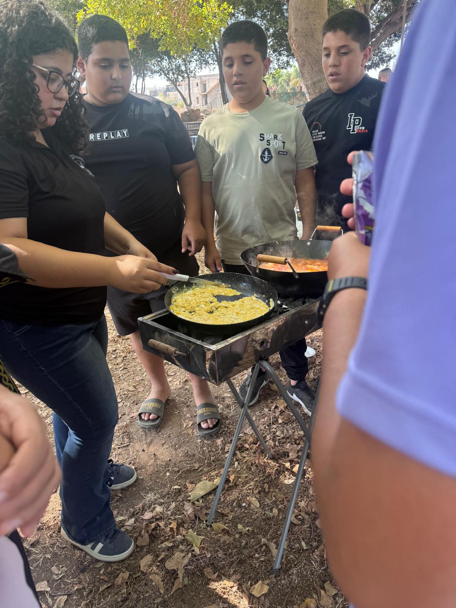
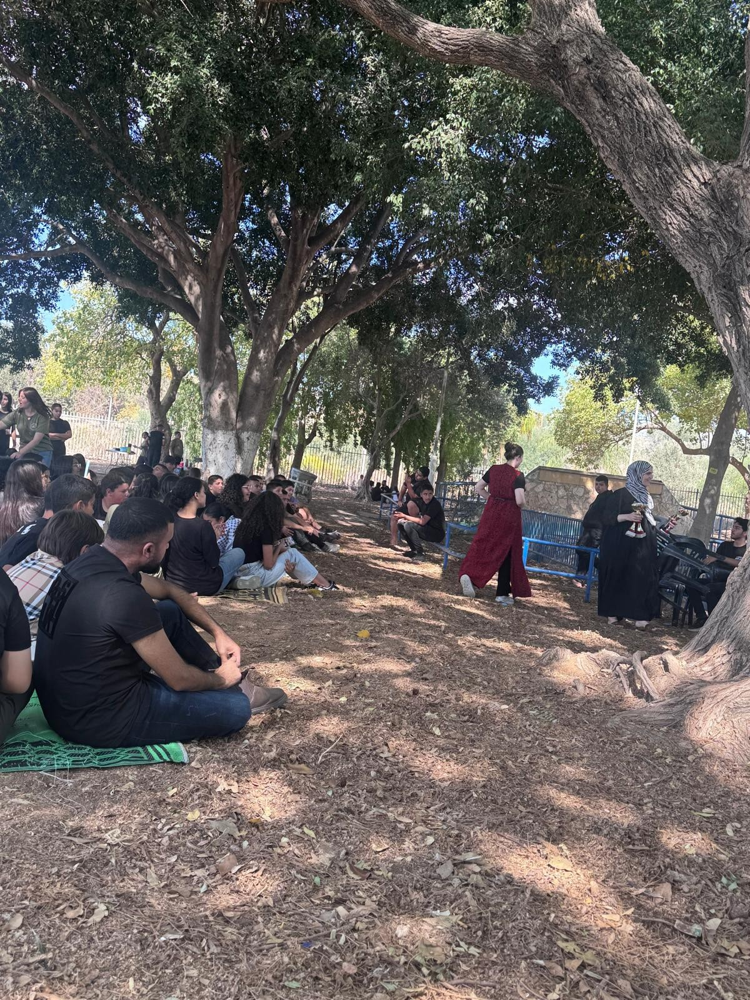
يوم الزيت والزيتون - كفر قرع
شاركت في يوم الزيت والزيتون في منتزه بين الأشجار في كفر قرع، وتضمن النشاط محطة للطبخ وفعاليات تعليمية وترفيهية هدفت إلى تعزيز التعاون بين الطلبة، والتعرف إلى الموروث الشعبي وأهمية الحفاظ عليه من خلال تجربة جماعية ممتعة وهادفة.
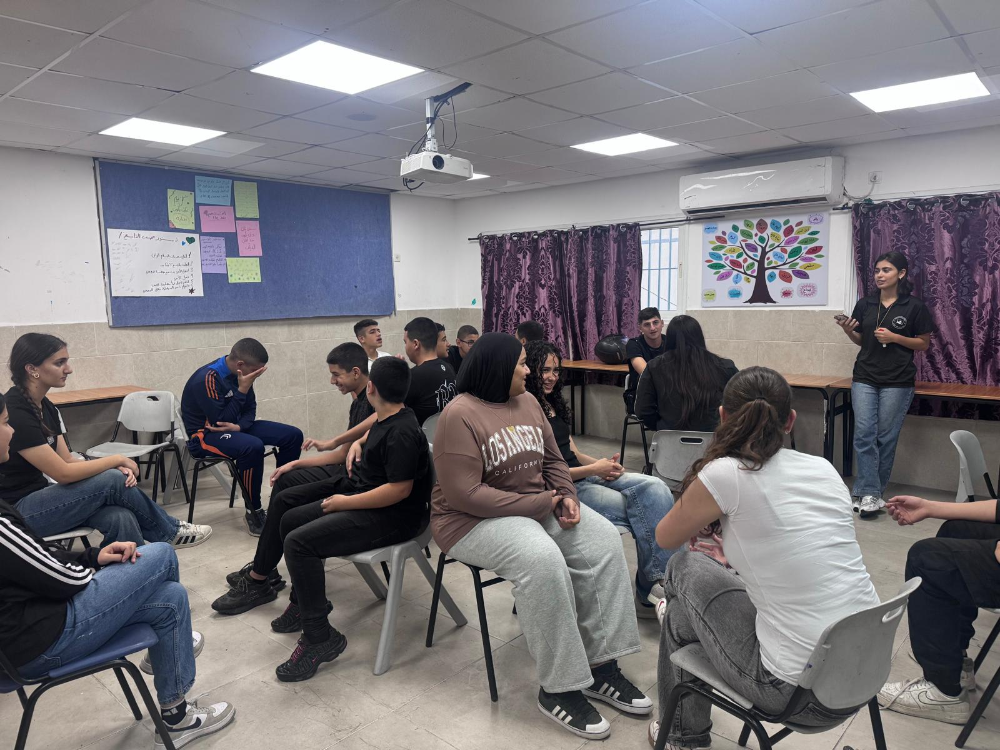
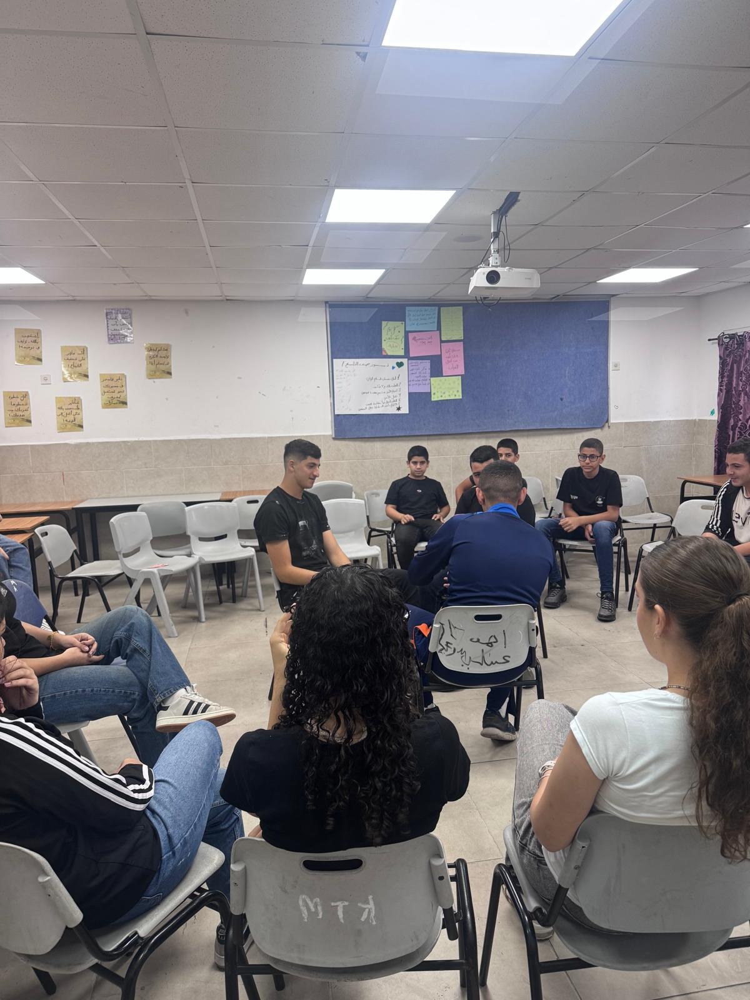
نشاط الكراسي الدائرية
تم تنفيذ نشاط الكراسي الدائرية الذي جمع بين الحركة والتعلم، وتضمن أسئلة ومناقشات تفاعلية هدفت إلى تنمية التفكير، وتعزيز المشاركة، وتشجيع الطلبة على التعبير عن آرائهم بثقة وبأسلوب حواري فعّال.
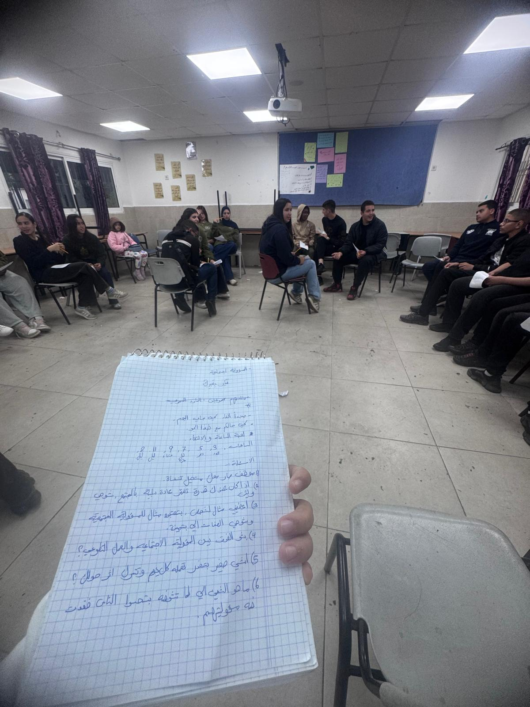
لعبة الساعة والالتقاء
تم تنفيذ لعبة الساعة والالتقاء، وهي نشاط تفاعلي يهدف إلى تعزيز التواصل بين الطلبة، وتشجيع الحوار والتعاون من خلال الإجابة عن أسئلة متنوعة ضمن أجواء ممتعة.
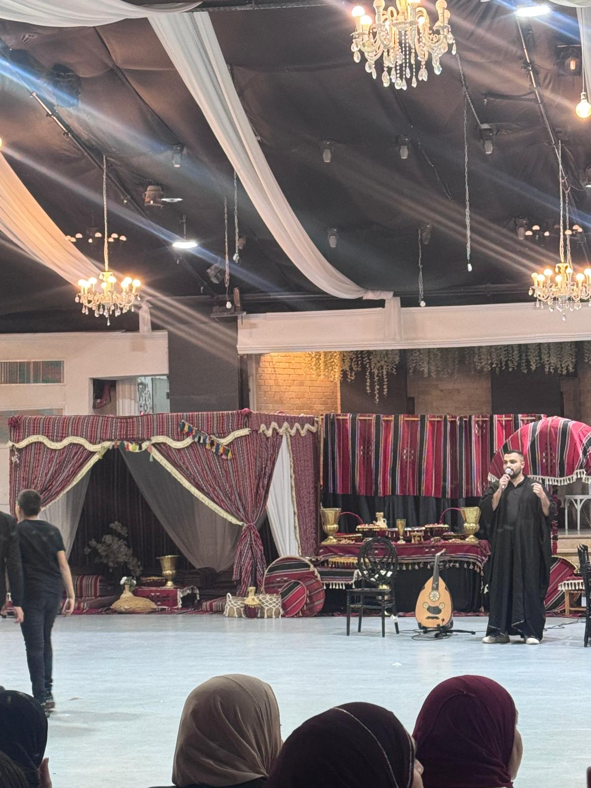
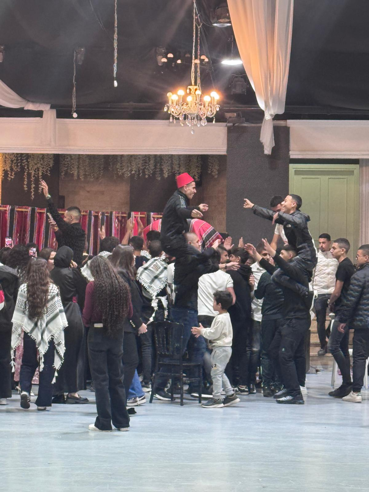
يوم التراث - كفر قرع
شاركت في يوم التراث في كفر قرع، والذي تضمن ارتداء اللباس التراثي، وتقديم الأكلات والضيافة الشعبية، وصندوقًا للتصوير، وأغانٍ شعبية، وعروض الدبكة، في أجواء هدفت إلى تعزيز الانتماء للتراث والهوية الثقافية.
حركة الراية - أم الفحم
يوم اللغة العربية
شاركت في تنفيذ وتمرير فعاليات يوم اللغة العربية في حركة الراية - أم الفحم، والذي تضمن فعاليات وتحديات لغوية متنوعة، مثل الأمثال العربية، وتحويل الكلمات من العامية إلى الفصحى، وأنشطة تفاعلية هدفت إلى تعزيز مكانة اللغة العربية وتنمية المهارات اللغوية لدى الطلبة.
يرجى مشاهدة الفيديو من خلال الملف المرفق.
مشاهدة الفيديولقاء توعوي حول التهور
شاركت في تنفيذ لقاء توعوي حول التهور، تضمن تحديًا تفاعليًا باستخدام البيضة / الحلوى والكأس لتوضيح أهمية التفكير قبل اتخاذ القرار، وتعزيز الوعي بعواقب التهور بأسلوب عملي وممتع.
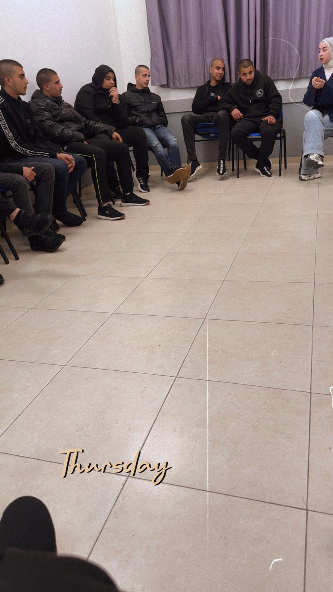
لقاء جماعي حول المستقبل
لقاء جماعي حول المستقبل، تضمن أسئلة وأنشطة تفاعلية شجعت الطلبة على التأمل في طموحاتهم المستقبلية، والتفكير في القرارات التي قد تغير مسار حياتهم.
حركة الراية - معاوية
اللقاء الأول للتعارف - مشروع وقت الفراغ
تم تنفيذ اللقاء الأول للتعارف ضمن مشروع وقت الفراغ في حركة الراية - معاوية، وتضمن نشاط الزوايا (أوافق/لا أوافق) حول أساليب استثمار وقت الفراغ، إلى جانب نقاش مفتوح حول هوايات الطلبة وكيفية توظيفها بشكل إيجابي، بهدف تعزيز الوعي بأهمية استثمار وقت الفراغ بصورة مفيدة.
تصنيف البطاقات وبناء الهرم - مشروع وقت الفراغ
تم تنفيذ لقاء ضمن مشروع وقت الفراغ تضمن نشاطًا لتصنيف البطاقات في الصندوق الأخضر أو الأحمر وفق كون النشاط مفيدًا أو غير مفيد، إضافة إلى لعبة بناء الهرم بالمكعبات، حيث يحصل كل مشارك يجيب إجابة صحيحة على مكعب لبناء الهرم، بهدف تعزيز التعلم والتعاون بأسلوب تفاعلي.
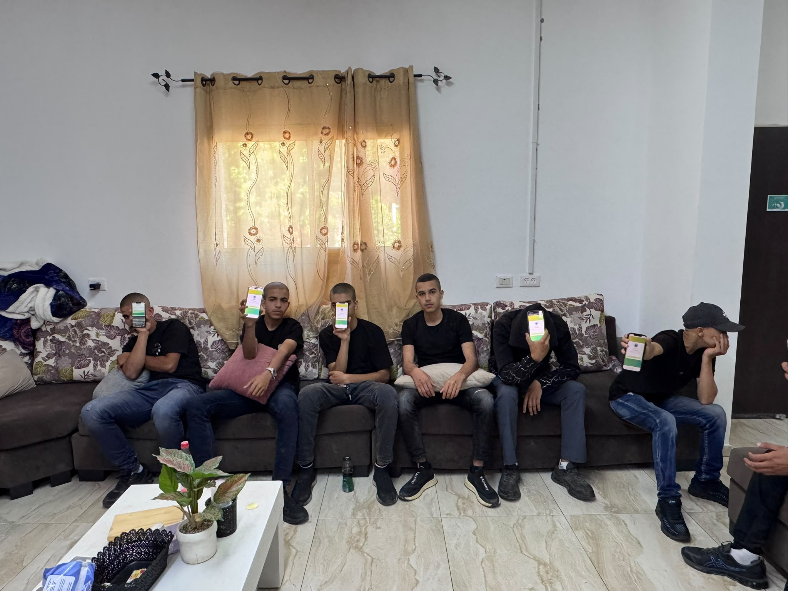
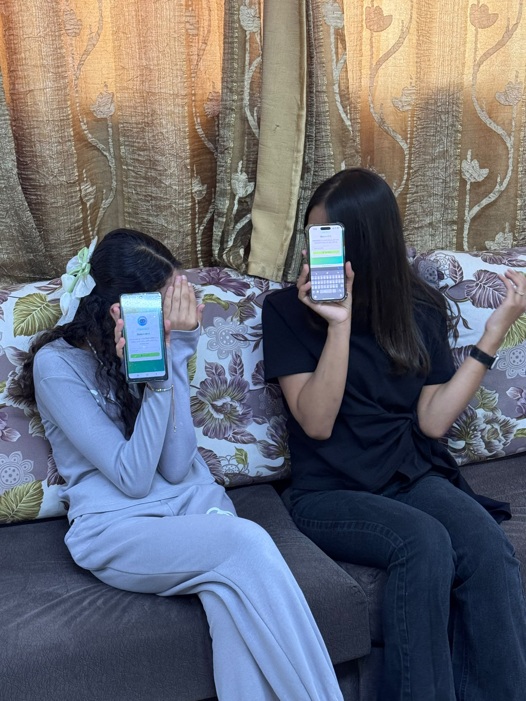
اللقاء الختامي - مشروع وقت الفراغ
تم تنفيذ اللقاء الختامي لمشروع وقت الفراغ، حيث تم التعريف بآلية عمل Chatbot وتجربته مع الطلبة لمساعدتهم في تنظيم أوقات فراغهم، واختُتم اللقاء بجلسة دائرية لتبادل الآراء والتأمل في أبرز ما تعلمه المشاركون خلال المشروع.
تجربة Chatbot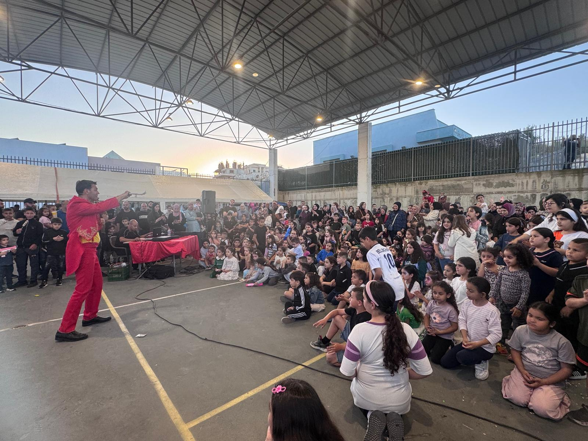
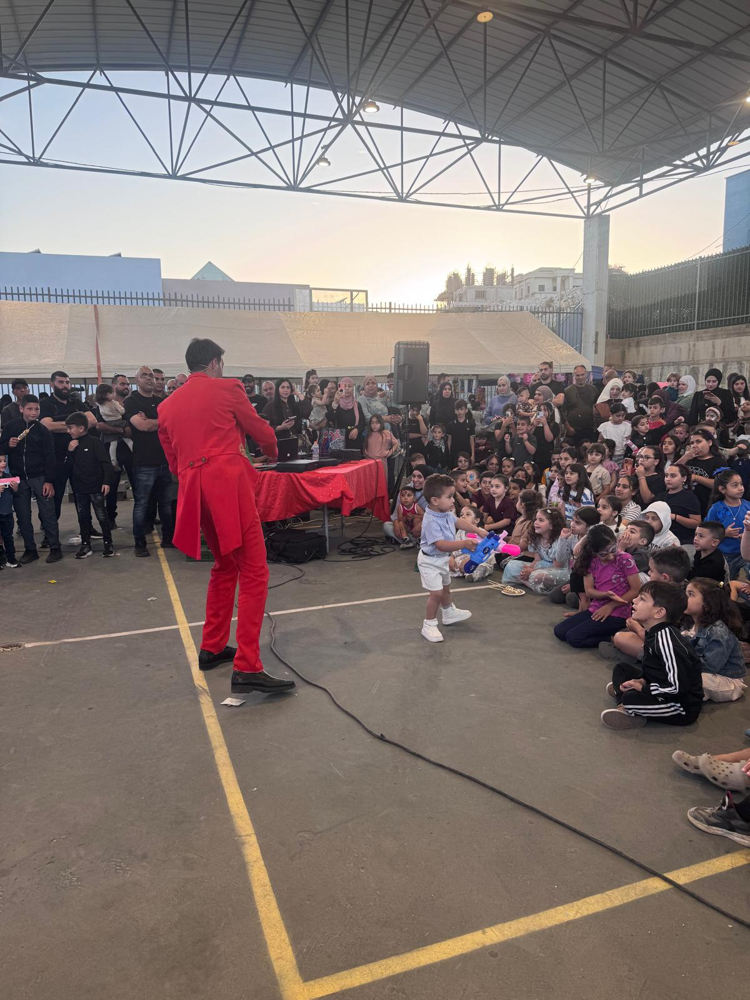
استقبال عيد الأضحى
شاركت في تنظيم وتنفيذ حفل استقبال عيد الأضحى، الذي تضمن توزيع الهدايا، وفعاليات ترفيهية متنوعة، وعروض سحر، ورسم على الوجوه، ومحطة للحيوانات، إضافة إلى الألعاب والحلويات، في أجواء مليئة بالفرح والتفاعل.
عرض المشاريع
يُظهر هذا الفيديو عرض المشاريع التي قمنا بها في تطبيقاتنا وعرضناها في أكاديمية القاسمي.
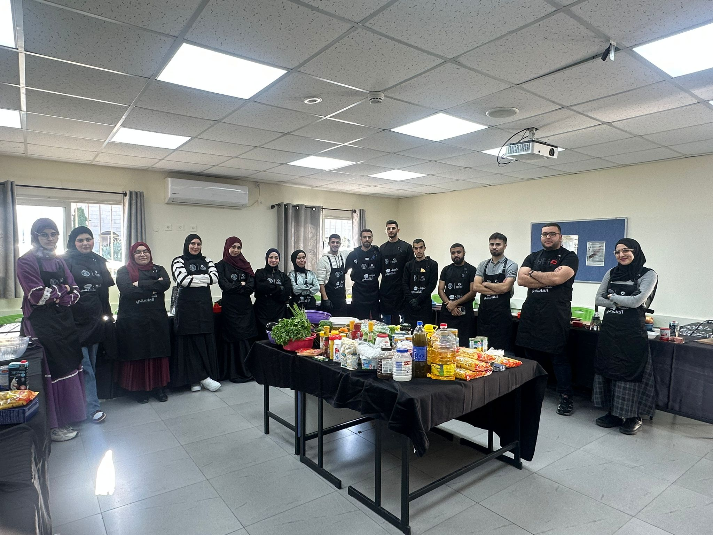
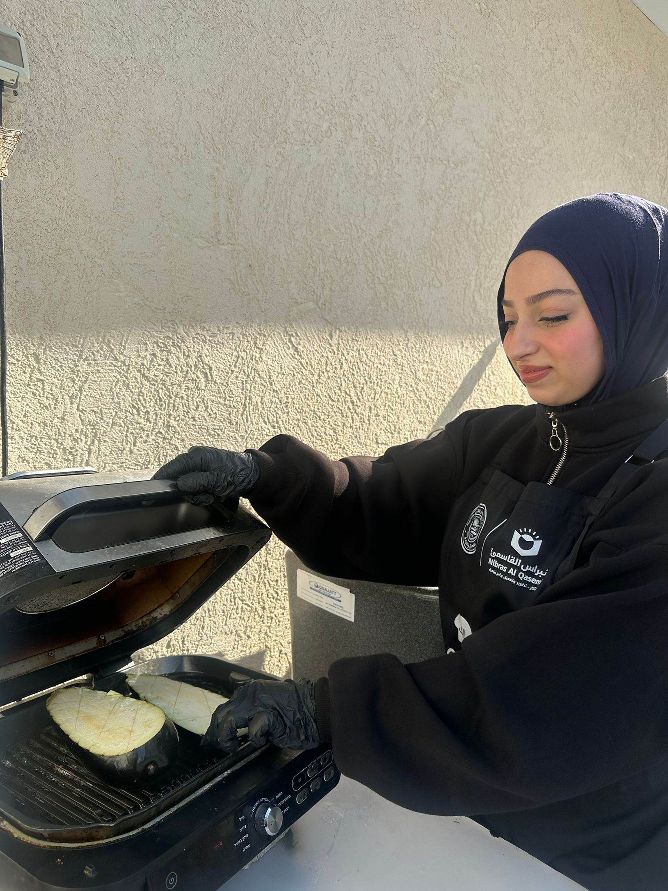
ورشة منافسة الطبخ - نبراس القاسمي
صور من ورشة منافسة الطبخ التي أُقيمت في نبراس القاسمي - المدرسة الثانوية، والتي هدفت إلى تعزيز العمل الجماعي والتفاعل بين المشاركات من خلال نشاط عملي ممتع ومفيد.
مقابلة مع ناشط اجتماعي
يعرض هذا الفيديو مقابلة مع ناشط اجتماعي تم إعدادها كتعويض عن بعض اللقاءات والفعاليات التي لم أتمكن من حضورها، حيث تناولت المقابلة مواضيع تربوية ومجتمعية مهمة، وأبرزت أهمية دور التربية غير المنهجية في المجتمع، ودور المتطوعين في دعم الفعاليات والمبادرات الاجتماعية، مما أسهم في تعزيز فهمي لأهمية هذا المجال وتأثيره في تنمية المجتمع.
يوجد فيديو تعويضي خارج الموقع، الرجاء مشاهدته من خلال الملف المرفق.
مشاهدة الفيديو